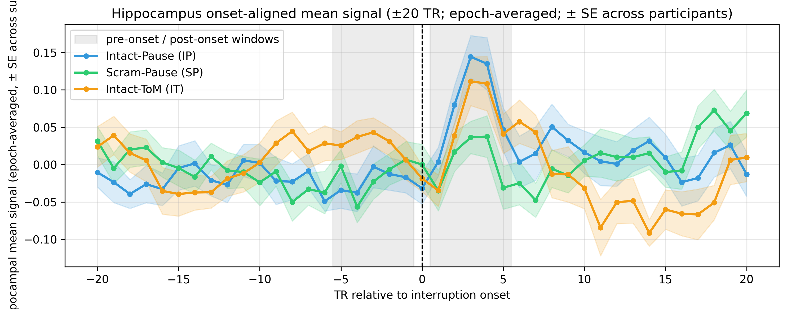

We tested whether mean hippocampal BOLD signal rises at the boundary between an interruption and the immediately following story segment. Per-voxel timecourses in the bilateral hippocampus mask were z-scored across the entire run and averaged across voxels to give one hippocampal timecourse per participant. For every interruption epoch this timecourse was extracted in a ±20-TR window centered on interruption onset, and the boundary-activity statistic was the post-onset minus pre-onset difference, with each window the 5 TRs immediately before / after onset. Per-participant differences from the three interrupted conditions (intact-pause, intact-theory-of-mind, scrambled-pause) were pooled across participants and tested against zero with a one-sample two-sided t-test, the only inferential test reported here.
Primary stats (unshaded) | Descriptive / context (light gray)
| Statistic | Mdiff | SE | 95% CI | t | df | p | n | SDdiff | Cohen’s d |
|---|---|---|---|---|---|---|---|---|---|
| Post − pre | 0.0495 | 0.0155 | [0.0185, 0.0804] | 3.199 | 56 | 0.0023 | 57 | 0.1167 | 0.424 |
Lines show the across-epoch mean hippocampal signal at each TR relative to interruption onset, per condition (IP = blue, SP = green, IT = orange), with the shaded band of the matching color giving ±1 standard error of the mean across participants. The two gray vertical bands mark the 5-TR pre-onset and 5-TR post-onset windows used for the boundary-activity statistic.

Per-subject pooled differences:
data/pooled_per_subject_diffs.csv | Summary
statistic: data/pooled_one_sample_t_stats.csv